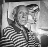

Sayısız defalar beresi, sigarası ve yüzündeki acı gülümsemeyle fotoğrafı çekilen Pablo Picasso (1881–1973), 20. yy’ın büyük bir bölümünde avangart sanatın simgesi olmuştur. Ressam ve heykeltrıaş olan Picasso yakın zamanlara kadar sanatsal hareketleri etkilemiş, dünya çapında bir ün kazanmış ve doksan iki yaşında Fransa’da ölene dek resim yapmaya devam etmiştir.

Picasso İspanya’daki Malaga’da doğdu. Ailesiyle birlikte taşındığı Barcelona’da sanat okuluna gitti. Uluslararası sanatın başkenti Paris’i ilk defa 1900 yılında ziyaret etti. Kısa süre sonra temelli buraya taşındı.
Picasso’nun ilk dönem kariyeri iki bölüme ayrılabilir. Her iki bölüm de kullandığı dominant renklere göre adlandırılmaktadır: Mavi Dönem (1901-1904) ve Gül Pembesi Dönemi (1904-1906). Mavi resimleri renk seçiminin de yansıttığı üzere suçluların ve dilencilerin soğuk portreleridir. Gül döneminde ise daha canlı renkler kullanmış ve komedyenler ya da sirk sanatçıları gibi eğlenceli figürleri seçmiştir.
Picasso, Paris’te aralarında Henri Matisse (1869–1954) ve Georges Braque (1882–1963) gibi isimlerin de bulunduğu şehrin büyüyen bohem sanat topluluğuna dahil oldu. İlk olarak 1918 yılında evlendi. Ancak kısa süre sonra çapkınlığı bir yaşam tarzı haline getirdi (üç ayrı kadından toplam dört çocuğu oldu).
Picasso, Braque ile birlikte kübizmin kurucusudur. Bu sanat stilini bir genelevdeki beş fahişeyi gösteren 1907 tarihli Les Demoiselles d’Avignon tablosu ile başlatmıştı. Kübistlerin konu aldıkları nesneler bir gitar ya da şarap şişesi gibi sıradan şeylerdi. Ancak bu nesneler köşeli şekiller şeklinde bozularak çiziliyordu.
I. Dünya Savaşı’nın bitimine doğru Picasso artık dünyanın en çok bilinen sanatçıları arasındaydı. İki savaş arasındaki dönemde ünü daha da arttı. En ünlü çalışmalarından Guernica 1937 yılında yapıldı. Devasa tablo, İspanyol İç Savaşı sırasında Almanlar tarafından bombalanan Bask köyü Guarnica’daki kurbanları gösteriyordu. Resim 20. yy’ın en ünlü sanat eserleri arasına girdi.
İspanyol vatandaşı olan Picasso, II. Dünya Savaşı sırasındaki Nazi işgali boyunca Paris’te kaldı. Savaştan sonra da resim yapmaya devam etti. Heykeller ve seramikler yaptı. 1973 yılında Mougins’teki evinde öldü.
Ek Bilgiler
1- Picasso vasiyetinde Guarnica’nın ülkesine ancak demokrasinin kurulmasının ardından dönebileceğini belirtmişti. Diktatör Francisco Franco (1892–1975) öldükten sonra 1978 yılında cumhuriyetçi bir anayasa ilan edildi. Resim 1981 yılında İspanya’ya taşındı.
2- Picasso, yaşamı boyunca yaklaşık 20 bin sanat eseri tamamladı. Bunların arasında sadece resimleri yoktu. Ayrıca seramik eserleri, heykeller ve tiyatro dekorları da yapmıştır. Picasso tarafından tasarlanan bir perde halen New York City’deki Four Seasons Restoran’da kullanılmaktadır.
3- 2003 yılında birisi, içinde Picasso’nun orijinal bir eserinin bulunduğu dosyayı metroya bıraktı. Quens’ten bir kitap satıcısının bulduğu eser birkaç gün sonra ait olduğu müzeye geri gönderildi.